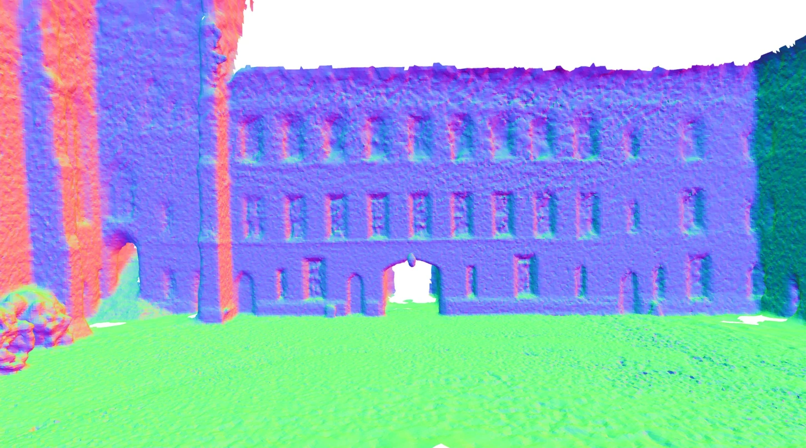
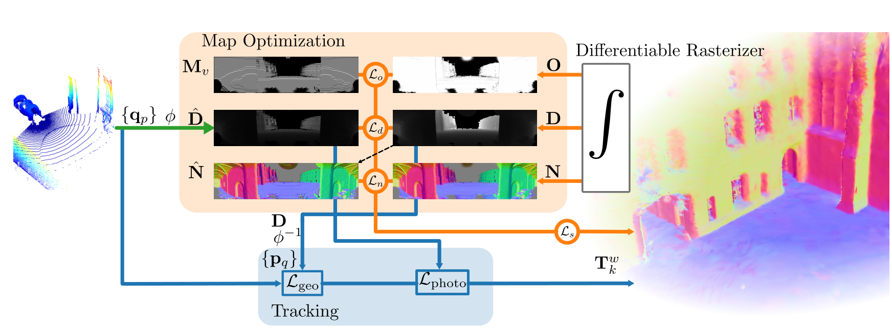

Expanded notes, equations and source links for the 25-slide lesson.
01 / 25
Splat-LOAM
Gaussian Splatting LiDAR Odometry and Mapping
A surface map made of splats
LiDAR measurements refine a continuous map. The same map supports pose estimation.
Emanuele Giacomini, Luca Di Giammarino, Lorenzo De Rebotti, Giorgio Grisetti and Martin R. Oswald

Original reconstruction from Figure 6 Independent reading companion with two live demos
Explanation
This presentation follows the final ICCV 2025 paper, pages 27630–27639, plus its supplementary material and released implementation. The paper authors are Emanuele Giacomini, Luca Di Giammarino, Lorenzo De Rebotti, Giorgio Grisetti and Martin R. Oswald. Bai Liping hosts this independent educational companion. The browser laboratories are small synthetic computations, not the authors’ CUDA pipeline or a reproduction of its benchmark scores. The cover image is a credited crop of the Ours row of Figure 6.
The explanation starts with the primitive and the LiDAR measurement model, then derives ray intersection and visibility weights. The rendering laboratory follows its setup slide. Mapping and tracking are separate operations with different variables and objectives. The registration laboratory isolates the geometric part of tracking. Results retain the paper’s dataset, metric and evaluation settings. Expanded notes provide assumptions and source links for every slide.
A range scan measures geometry from one sensor pose.
INPUT
A stream of 3D LiDAR points.
Each scan has a new pose and incomplete visibility.
Projecting to azimuth and elevation gives a range image.
OUTPUT
A trajectory and local maps of flat Gaussian patches.
The renderer predicts range, normals and coverage.
Rendered geometry also supplies the tracking reference.
Explanation
The pure-LiDAR setting matters: the method does not need RGB images to refine its map. Supplement C explains that this study omits color, intensity and reflectivity features to focus on geometric reconstruction. “Photometric” registration later in the deck means alignment of range-image values. Stacking raw scans can grow very large, while a continuously refined surface representation can pool evidence across views.
Orange: refine the map. Blue: register the current measurement.

Figure 2, Giacomini et al. The tracker uses rendered geometry and range images.
Explanation
Read the original Figure 2 as two coupled paths. Map optimization compares rendered channels with LiDAR-derived supervision and changes Gaussian parameters. Tracking back-projects the rendered range image, builds geometric reference patches and estimates the next sensor pose with geometric and range-image residuals. These processes reuse the same scene representation. The released tracker calls gsaligner; it is not an NDT frontend and should not be described as simply backpropagating a pose through the Gaussian rasterizer.
o is opacity. The Gaussian softly weights an elliptical surface patch.
Explanation
The term “2D” describes the intrinsic surface, not the dimension of the world or sensor trajectory. Both tangents and the center are three-dimensional. A point on the patch is parameterized by two local coordinates. Its normal is explicit, and its normal scale is zero. This differs from a full 3D Gaussian ellipsoid. The rotation and two scales can be optimized without adding a volumetric thickness.
At −180° and +180°, nearby rays meet across the image seam. A splat can contribute to both image edges.
Explanation
Spherical projection turns a scan into an image indexed by azimuth and elevation, with measured radial distance as its value. The supplementary material computes the angular limits and intrinsics from each input point cloud rather than assuming a fixed sensor datasheet field of view. Section 3.2.3 handles the horizontal seam by shifting projected bounding-box vertices around the center direction, computing their extent and wrapping tile assignments back. The demo fixes a simple display field of view for teaching.
Evaluate G(a,b), then combine its contribution with other visible patches.
Explanation
These equations are an equivalent geometric derivation for orthonormal tangents, a unit ray and nonparallel ray-plane intersection. The paper’s efficient formulation represents the ray as the intersection of two planes and transforms those planes into splat space, solving a small system. It avoids a local affine footprint approximation that becomes problematic for large primitives and slanted views. An infinite plane intersection is weighted by the Gaussian support; it is not a hard hit anywhere on the infinite plane.
The code can form expected range: Dexpected = Daccum / O = 4.57 m.
The demo distinguishes both values.
Explanation
Equations (5)–(7) accumulate range, normal and opacity with front-to-back alpha compositing. For the example, the far weight is (1−0.75)×0.50=0.125, so accumulated range is 0.75×4+0.125×8=4 m. Dividing by opacity gives approximately 4.5714 m. The released gaussian_renderer forms expected depth from the accumulated channel and can mix it with median depth via depth_ratio. These quantities must not be silently conflated. The paper sorts primitive lists per 16×16 tile; the browser uses exact per-ray sorting for a small synthetic scene.
The next slide computes spherical rays and Gaussian contributions live.
TRY THESE CONTROLS
Rotate and resize the selected surface.
Lower its opacity to expose the rear patch.
Turn the sensor and watch the footprint move across the range image.
WHAT TO WATCH
The map stays fixed when only the sensor moves.
Slant changes intersection range across one splat.
Low coverage changes accumulated and expected range differently.
Explanation
The rendering lab uses a small synthetic arrangement of planar Gaussian patches in a 110-degree azimuth window. It performs explicit three-dimensional ray intersections, Gaussian footprint evaluation and front-to-back blending. The window does not demonstrate the full panorama’s ±180-degree seam. It does not reproduce the CUDA tile rasterizer, gradient backpropagation, density control or a real LiDAR acquisition. The experiment is designed to show the forward model. Its controls change actual geometric and optical parameters, not prerecorded images.
This laboratory visualizes the rendering equations with synthetic data. It offers accumulated range from the paper equations and expected range corresponding to the normalization in the released renderer. A nearly transparent ray has no reliable surface range. The small brute-force calculation uses per-ray sorting instead of the paper’s per-tile approximation. It has no mapping optimizer or real dataset.
The system revisits recent keyframes while refining one Gaussian map.
INITIALIZE
Project the LiDAR scan and mask missing returns.
Sample valid points with higher weight near range gradients.
Back-project centers and initially orient normals toward the sensor.
REFINE
Render the current local model.
Compare valid measurements with predicted range and coverage.
Sample recent keyframes more often and optimize the Gaussian parameters.
Explanation
Section 3.3 uses local Gaussian models instead of growing one active map indefinitely. Initialization samples nd points with probabilities influenced by range-image gradients. Refinement samples keyframes from a geometric distribution, with at least 40 percent probability assigned to the most recent keyframe. The local model changes when visibility or configured limits require it. This bounded local optimization is distinct from a globally consistent loop-closure backend.
The range term is weighted L1 error on valid pixels. The normal term aligns the rendered normal with the normal derived from gradients of the rendered range image, providing self-regularization. Opacity loss encourages coverage where LiDAR returns exist. The paper’s printed Eq. (17) appears to reverse the sign of the intended scale penalty. The released mapper uses the positive excess max(scale)−threshold, consistent with its stated purpose. This deck describes that intent and implementation rather than repeating the apparent sign error.
Large range residual identifies poorly reconstructed areas.
New splats start from actual LiDAR returns.
PRUNE AND PRESERVE
Prune transparent or very small primitives.
Restrict excessive scale growth.
Avoid opacity resets, which could erase useful local-map evidence.
Explanation
The masks Mn=[O≤λd,o] and Me=[|D−Dhat|≥λd,e] favor unobserved or under-reconstructed image regions during densification. The paper also prunes transparent or very small primitives and explicitly avoids opacity resets. This is an incremental LiDAR mapping strategy, not a claim that every density-control operation from the original 3DGS algorithm carries over unchanged. Keyframe selection and local-map limits control how long evidence stays active.
The geometric term and range-image term provide complementary constraints.
GEOMETRIC ALIGNMENT
Back-project a rendered keyframe into 3D.
Build PCA-based kd-tree leaves as planar patches.
Align scan points to those planes with a robust loss.
RANGE-IMAGE ALIGNMENT
Warp between rendered and measured spherical range images.
Use image-value residuals for subpixel refinement.
Update the pose on SE(3) with Gauss–Newton.
Explanation
Section 3.3.3 defines Lodom=Lgeo+Lphoto. The tracker samples the local Gaussian model when a new keyframe is selected, giving it a geometric and a range-image representation. Geometric registration uses PCA-based kd-tree planar patches and a Huber robust loss. The so-called photometric term operates on LiDAR range images; color is not used in this study. This is separate from differentiation through the renderer to refine map parameters.
Correspondences and weights update as the estimate moves.
The second residual compares range images after back-projection, pose transformation and spherical re-projection.
Explanation
This slide uses a consistent simplified frame convention to explain the geometric residual, rather than reproducing ambiguous frame subscripts in the paper. The weighted normal equations are the standard Gauss–Newton linearization of the local robust objective. In the full system, the pose increment belongs to se(3). The range-image residual uses a warp built from back-projection, the relative pose and spherical projection. The following lab specializes to SE(2), point-to-line geometry and a damped robust local solve, isolating observability without implementing the image term.
The next experiment isolates the geometric part of the tracker.
CORNER
Perpendicular surfaces constrain both translations.
Start from an offset pose and run the solver.
Watch transformed scan points approach the reference surfaces.
CORRIDOR
Parallel walls constrain lateral motion and heading.
Translation along the corridor stays weak or unobservable.
A low residual can coexist with a remaining pose error.
Explanation
The demonstration uses a synthetic 2D scan and reference line patches, with an SE(2) pose and robust point-to-line residuals. Ground truth generates the measurements and supplies an evaluation-only pose-error readout; the optimizer receives only the scan and reference geometry. It does not run the paper’s PCA kd-tree, range-image refinement, full SE(3) tracker or Gaussian mapping loop. The corridor is an intentional observability example: geometric alignment cannot recover a direction absent from its constraints.
The laboratory computes a robust damped Gauss–Newton update on a synthetic planar point-to-line problem. The residual plot and pose-error readouts come from the current numerical state. It is a pedagogical reduction of the geometric component, not a reproduction of the complete Splat-LOAM tracker. The hidden true pose is used for data generation and evaluation only. A low corridor residual does not guarantee the along-corridor translation is correct.
Strong reconstruction, with scene-dependent rankings
Selected F-scores (%) from the final ICCV paper’s Table 1. Higher is better.
GROUND-TRUTH POSES · 20 CM VOXELS · 20 CM F-SCORE THRESHOLD
Method
quad-easy
math-easy
keble-02
observatory-01
OpenVDB
88.85
84.51
91.74
86.16
N³-Mapping
94.54
fail
93.47
87.94
PIN-SLAM
88.05
73.82
79.65
72.31
Splat-LOAM
96.74
90.02
94.41
83.04
Splat-LOAM leads these selected Newer College and Keble cases. N³-Mapping leads the selected Observatory case.
Explanation
These are selected factual F-score values from the final ICCV Table 1, not the earlier preprint table. All mapping pipelines in the table receive ground-truth poses, so these scores isolate reconstruction rather than end-to-end odometry-plus-mapping performance. The full table also includes VoxBlox, bodleian-02 and Mai City 01/02. The 20 cm matching threshold and voxel size are essential context. Splat-LOAM is competitive but does not have the highest F-score on every sequence. The browser demos do not generate these benchmark values.
Figure 6, Giacomini et al. The visualization complements the numerical comparison.
Explanation
Figure 6 compares reconstructed geometry for the quad-easy sequence. The full original crop retains all method labels and rows, so the visual comparison does not hide a baseline. Fine geometric details are one reason a surface-oriented representation is interesting. This image illustrates one sequence and should not be treated as evidence of universal superiority across scenes or a result produced by the educational browser renderer.
The supplement reports a higher mean RPE than several comparison methods.
SUPPLEMENT TABLE B · MEAN RPE (%)
Method
Mean RPE ↓
MAD-ICP
0.29
PIN-SLAM
0.30
LOAM
0.38
Splat-LOAM
0.59
HOW TO READ THE RESULT
These methods complete the ten listed sequences.
Splat-LOAM’s strength combines reconstruction quality with a shared surface model.
A joint geometric and range-image tracker improves its own ablation.
RPE evaluation follows trajectory-dependent delta steps. This is not a KITTI-only table.
Explanation
Supplement Table B lists ten sequences from Newer College, Oxford Spires, VBR and Mai City. The displayed mean RPE values are copied from its explicitly labeled avg [%] column. The per-sequence entries appear as fractions despite a percent caption, so this slide deliberately avoids reinterpreting those columns. MAD-ICP, PIN-SLAM, LOAM and Splat-LOAM have no failed sequence in that table. Other reported baselines have averages excluding failures and are omitted here to avoid mixing completion conditions. Figure 7 supports the combination of geometric and photometric terms within the authors’ own tracker.
The paper samples nm points from keyframe-rendered range and normal maps, then applies Poisson reconstruction. Its Table 2 compares extraction variants on quad-easy. Applying Poisson directly to Gaussian centers loses information about the surfaces the primitives cover, and TSDF/marching-cubes extraction performs worse in this particular ablation. These scores are dataset-specific. Mesh generation is a separate step in the released command-line workflow.
Figure 5 studies active primitives, GPU memory and mapping-iteration frequency.
Iteration FPS is not full scan-processing FPS.
Original Figure 1. Plotted positions show the paper’s trade-off, not exact tabulated timings.
Explanation
The paper reports a workstation with an Intel Core i9-14900K, 64 GB RAM and NVIDIA RTX 4090 with 24 GB VRAM. Figure 5 varies the active primitive count on the campus sequence, allowing up to 100 keyframes per local map and sampling at most 50 percent of points. It measures mapping-iteration frequency, which cannot be substituted for end-to-end LiDAR frame throughput. Figure 1 uses active memory, not total allocated GPU memory including the CUDA context and all runtime overhead. No exact speedup or real-time guarantee is inferred from the chart.
The paper identifies motion distortion and global consistency as unfinished work.
SYSTEM LIMITS
Scanning motion can distort a LiDAR frame.
Loop closure is future work in the paper.
Local registration depends on geometry, visibility and initialization.
INTERPRETATION LIMITS
Reconstruction tables use known poses.
Reported timings depend on the experimental hardware.
The browser labs isolate mechanisms with synthetic data.
Explanation
The conclusion proposes joint pose and velocity estimation to compensate for acquisition-time motion distortion, and future loop closure to improve global consistency. Supplement F shows that rotation during acquisition changes the projective residual and can hurt both mapping and registration. These are actual stated limitations, not inferred claims that every observed failure is caused by one factor. The corridor demo adds a general geometric observability lesson. The released README additionally cautions that car-like odometry configurations are still being ported and not all are working correctly.
The code separates tracking, mapping and extraction
The linked fork preserves the authors’ public implementation.
SOURCE MAP
Location
Role
slam/tracker.py
Calls the hybrid gsaligner registration
slam/mapper.py
Mapping losses and Gaussian maintenance
gaussian_renderer/
Spherical render outputs and range normalization
run.py
slam, mesh, eval_odom and eval_recon commands
The full pipeline requires an NVIDIA CUDA GPU and a configured dataset. These browser demos run locally without either.
Explanation
The repository README documents cloning recursively to include submodules, Docker/Pixi/Conda setup and the run.py command interface. It explicitly requires an NVIDIA GPU with CUDA capabilities. A correct real-data run also needs dataset paths and appropriate configuration. This companion neither downloads a dataset nor claims to execute the full benchmark. The map-loss sign and expected-depth handling have been checked against the released source. Follow the current README for installation rather than treating a short slide snippet as complete setup instructions.
Primary evidence comes from the final ICCV 2025 publication and supplement. The arXiv identifier is 2503.17491; an earlier HTML preprint has fewer evaluation sequences than the final version. This independent companion uses original credited paper figures, editable slide equations and numerical tables, and synthetic browser laboratories. The repository provides the full implementation. Related site notes explain Gaussian splatting and rigid registration in more detail.